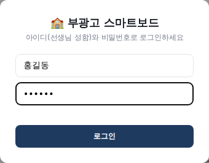
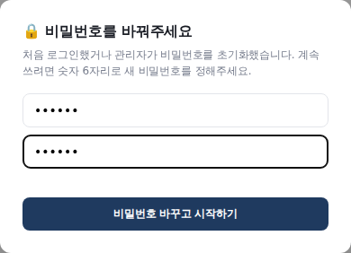
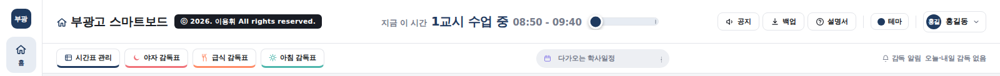
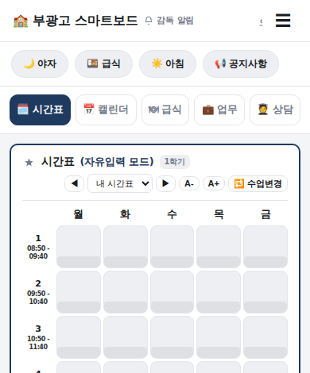
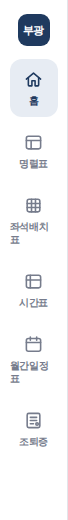

예전 「스마트 대시보드」 대신 이제 새 스마트보드를 씁니다. 아래 순서대로 한 번만 따라 하시면 됩니다. (약 10분)
새 스마트보드 주소
https://08hwichemi.github.io/smartboard/
휴대폰 카메라로 왼쪽 QR 코드를 비추면 바로 열립니다.
1무엇이 달라졌나요?
한마디로, 내가 적은 내용이 어디서든 그대로 보입니다.
적은 내용이 인터넷에 자동으로 저장됩니다. 예전에는 그 컴퓨터 안에만 저장돼서, 컴퓨터를 바꾸거나 다른 곳에서 열면 내용이 없었습니다. 이제는 캘린더 메모, 할 일, 상담 기록, 시간표 등이 내 계정에 자동 저장됩니다. 저장 버튼을 따로 누를 필요가 없습니다.
학교에서 적고, 집에서 열어도 그대로 있습니다. 어느 컴퓨터에서든 내 아이디로 로그인만 하면 적어 둔 내용이 그대로 나옵니다.
휴대폰에서도 볼 수 있습니다. 휴대폰으로 시간표, 캘린더, 급식, 할 일, 감독 일정을 확인하고 바로 적을 수도 있습니다. 컴퓨터에 적은 내용이 휴대폰에 바로 나오고, 휴대폰에 적은 내용도 컴퓨터에 바로 나옵니다.
그래서 이제는 선생님마다 아이디가 있습니다. 처음 한 번 로그인하고 비밀번호를 정하시면 됩니다(3번에서 안내).
2크롬에서 새 스마트보드 열기
인터넷 창은 꼭 크롬(Chrome)을 써 주세요. 동그란 빨강·노랑·초록 아이콘입니다.
바탕화면이나 아래 작업 표시줄에서 크롬을 두 번 눌러 엽니다.
맨 위 주소 칸을 한 번 누르고, 아래 주소를 그대로 입력합니다. 08hwichemi.github.io/smartboard
🔒08hwichemi.github.io/smartboard
키보드의 Enter 키를 누르면 스마트보드 로그인 화면이 나옵니다.
💡 입력이 어려우시면메신저로 받은 주소를 눌러서 열어도 됩니다. 크롬이 아닌 다른 창(엣지 등)으로 열렸다면, 주소를 복사해서 크롬에 붙여 넣어 주세요.
3처음 로그인하고 비밀번호 바꾸기
아이디 칸에 선생님 성함을 적습니다. (예: 홍길동, 띄어쓰기 없이)
비밀번호 칸에 처음 비밀번호 123456 을 적고 로그인을 누릅니다.

▲ 로그인 화면
“비밀번호를 바꿔주세요” 창이 나옵니다. 앞으로 쓸 숫자 6자리를 두 번 똑같이 적고 비밀번호 바꾸고 시작하기를 누릅니다.

▲ 비밀번호 바꾸기 화면 (숫자 6자리)
스마트보드 첫 화면이 나오면 끝입니다! 🎉
🔒 비밀번호는 꼭 기억해 주세요
새 비밀번호는 관리자도 볼 수 없습니다. 잊어버리시면 관리자 선생님께 “비밀번호 초기화”를 부탁하세요. 그러면 비밀번호가 다시 123456 이 되고, 로그인할 때 새 비밀번호를 다시 정하시면 됩니다.
생일·전화번호 끝자리처럼 남이 짐작하기 쉬운 숫자는 피해 주세요. (학생 연락처가 들어 있습니다.)
💡 아이디가 안 된다고 나오면성함을 정확히(띄어쓰기 없이) 적었는지 확인해 주세요. 그래도 안 되면 아직 계정이 없는 것이니 관리자 선생님께 말씀해 주세요.
4앱으로 설치하기
설치하면 인터넷 창 없이 프로그램처럼 따로 뜨고, 바탕화면에 아이콘이 생겨 한 번에 열 수 있습니다.
스마트보드가 열린 크롬 창에서, 주소 칸 오른쪽 끝에 있는 설치 아이콘(모니터 모양에 아래 화살표 🖥️⬇)을 누릅니다.
🔒08hwichemi.github.io/smartboard☆⋮
앱을 설치하시겠습니까?
부광고 스마트보드
취소설치
“앱을 설치하시겠습니까?” 창이 뜨면 파란 설치 버튼을 누릅니다.
스마트보드가 새 창으로 따로 열리고, 바탕화면에 「부광고 스마트보드」 아이콘이 생깁니다.
💡 설치 아이콘이 안 보이면
크롬 오른쪽 위 점 세 개 ⋮ 를 누르고, 메뉴에서 “설치”라는 글자가 들어 있는 항목을 찾아 누르세요.
(크롬 버전에 따라 “전송, 저장, 공유” → “페이지를 앱으로 설치” 또는 “부광고 스마트보드 설치”로 보입니다.)
이미 설치돼 있으면 아이콘 대신 “앱에서 열기”가 보입니다.
5예전에 적어 둔 내용 가져오기 (필요한 분만)
예전 대시보드의 캘린더 메모, 할 일, 상담 기록, 즐겨찾기 등을 새 스마트보드로 옮기는 방법입니다. 예전 대시보드를 지우기(6번) 전에 해 주세요. 새로 시작하셔도 되는 분은 건너뛰세요.
① 예전 대시보드에서 백업 파일 받기
예전 대시보드를 엽니다.
위쪽의 💾 백업 버튼을 누르고, 백업 파일을 다운로드합니다. 파일은 컴퓨터의 「다운로드」 폴더에 .json으로 끝나는 이름으로 저장됩니다.
💡 예전 대시보드가 이미 안 열리면예전 대시보드는 15일마다 「다운로드」 폴더에 백업 파일을 자동으로 만들어 두었습니다. 그 폴더에서 가장 최근 날짜의 백업 파일(.json)을 쓰시면 됩니다.
② 새 스마트보드에 넣기
새 스마트보드 위쪽의 ⬇ 백업 버튼을 누릅니다.

▲ 오른쪽 위에 공지 · 백업 · 설명서 · 테마 버튼과 내 이름이 있습니다.
📤 백업 파일로 복원하기를 누르고, 받아 둔 백업 파일을 골라 열기를 누릅니다.
“복원합니다. 계속할까요?”에 확인을 누르면 예전 내용이 들어오고, 내 계정에 자동으로 저장됩니다.
⚠️ 한 번만 하세요복원하면 새 스마트보드에 지금 적혀 있는 내용이 백업 파일 내용으로 바뀝니다. 새 스마트보드를 쓰기 시작한 뒤에 하면 그동안 적은 내용이 사라질 수 있으니, 처음 설치했을 때 한 번만 해 주세요.
6컴퓨터를 켤 때 자동으로 뜨게 하기
예전 대시보드가 켤 때마다 자동으로 떴다면, 그건 「시작프로그램」 폴더에 넣어 두었기 때문입니다. 이 폴더에서 예전 것은 지우고 새 것을 넣으면 됩니다.
① 시작프로그램 폴더 열기
키보드에서 ⊞ 윈도우 키를 누른 채로 R 키를 누릅니다. 왼쪽 아래에 “실행” 창이 뜹니다.
칸에 shell:startup 을 입력하고 확인(또는 Enter)을 누릅니다.
🏃 실행
열기:
shell:startup
확인취소
「시작프로그램」이라는 폴더 창이 열립니다. 여기에 들어 있는 것들이 컴퓨터를 켤 때 자동으로 실행됩니다.
② 예전 대시보드 지우기
폴더 안에서 예전 대시보드 아이콘(「부광고 통합 대시보드」, 「스마트 대시보드」처럼 생긴 이름)을 찾습니다.
그 아이콘을 마우스 오른쪽 버튼으로 누르고 “삭제”(휴지통 모양 🗑️)를 누릅니다. (아이콘을 한 번 누른 뒤 키보드 Delete 키를 눌러도 됩니다.)
바탕화면에도 예전 대시보드 아이콘이 있으면 같은 방법으로 지워 주세요.
⚠️ 지우기 전에 확인예전 대시보드에 적어 둔 캘린더·할 일 등을 새 스마트보드로 옮기고 싶으시면, 지우기 전에 5번의 “백업 파일”부터 받아 두세요. (시작프로그램 폴더의 아이콘을 지워도 예전 대시보드 내용이 없어지지는 않습니다.)
③ 새 스마트보드 넣기
바탕화면의 「부광고 스마트보드」 아이콘을 한 번 누르고, 키보드 Ctrl + C 를 누릅니다. (복사)
열어 둔 시작프로그램 폴더 창의 빈 곳을 한 번 누르고, Ctrl + V 를 누릅니다. (붙여넣기)
폴더 안에 「부광고 스마트보드」 아이콘이 생기면 끝입니다. 다음부터 컴퓨터를 켜면 새 스마트보드가 자동으로 뜹니다.
💡 바탕화면에 아이콘이 없으면화면 왼쪽 아래 시작(⊞) 버튼을 누르고 “부광고 스마트보드”를 입력하세요. 나온 항목을 마우스 오른쪽 버튼으로 누르고 “파일 위치 열기”를 누르면 아이콘이 있는 폴더가 열립니다. 거기서 아이콘을 복사(Ctrl+C)해서 시작프로그램 폴더에 붙여 넣으세요.
7휴대폰에서 쓰기
휴대폰 홈 화면에 앱처럼 아이콘을 만들어 두면 언제든 한 번에 열 수 있습니다. 아이디·비밀번호는 컴퓨터와 똑같습니다.
🍎 아이폰
카메라로 이 안내문 맨 위의 QR 코드를 비추고, 뜨는 노란 주소를 누릅니다. (또는 사파리(Safari)를 열고 주소를 입력)
사파리 화면 아래의 공유 버튼(네모에 위 화살표 )을 누릅니다. (안 보이면 주소창 옆 ⋯ 를 먼저 누르세요)
메뉴를 위로 밀어서 “홈 화면에 추가”를 누릅니다.
오른쪽 위 “추가”를 누르면 홈 화면에 「부광고 스마트보드」 아이콘이 생깁니다.
아이콘을 눌러 열고 로그인합니다.
🤖 갤럭시
카메라로 이 안내문 맨 위의 QR 코드를 비추고, 뜨는 주소를 누릅니다. (또는 크롬(Chrome) 앱을 열고 주소를 입력)
크롬 오른쪽 위 점 세 개 ⋮ 를 누릅니다.
“홈 화면에 추가” 또는 “앱 설치”를 누릅니다.
“설치”(또는 “추가”)를 누르면 홈 화면에 「부광고 스마트보드」 아이콘이 생깁니다.
아이콘을 눌러 열고 로그인합니다.
삼성 인터넷으로 열렸다면아래 ≡ 메뉴 → “현재 페이지 추가” → “홈 화면”을 누르세요.
휴대폰 화면은 이렇게 생겼습니다

가운데 줄의 시간표 · 캘린더 · 급식 · 업무 · 상담을 눌러 바꿔 봅니다.
윗줄의 야자 · 급식 · 아침은 감독표, 공지사항은 공지 목록입니다.
캘린더 날짜를 누르면 메모를 적을 수 있고, 컴퓨터에도 바로 나옵니다.
오른쪽 위 ☰ 에서 공지 보내기, 테마, 로그아웃을 할 수 있습니다.
명렬표·좌석배치표 같은 새 기능은 화면이 넓은 컴퓨터에서 써 주세요.
8새로 생긴 기능
화면 맨 왼쪽 메뉴에서 누르면 열립니다. 같은 버튼을 한 번 더 누르면 첫 화면(홈)으로 돌아옵니다.

▲ 왼쪽 메뉴
🧑🎓 명렬표학년·반을 고르면 학생 이름과 연락처(학생·보호자)를 바로 볼 수 있습니다.
🪑 좌석배치표반을 고르면 번호순·랜덤으로 자리를 채우고 예쁘게 꾸며 인쇄합니다. 여러 반 학생을 섞은 수업도 됩니다.
🗓️ 시간표 만들기내 시간표나 학생 시간표를 카드 모양으로 꾸며 인쇄·그림·PDF로 만듭니다. 반 전체도 한 번에 됩니다.
📅 월간일정표학사일정과 우리 반·부서 일정을 A4 한 장짜리 달력으로 만들어 인쇄합니다.
📋 조퇴증담임 도장이 찍힌 조퇴증 양식을 만들어 인쇄합니다.
📰 뉴스 · 웹 검색첫 화면에서 분야별 뉴스와 구글 검색을 바로 씁니다.
🔔 감독 알림오늘·다음 날 내 감독(야자·급식·아침)이 있으면 위쪽에 알려 줍니다.
📢 공지 & 소담소담공지를 보내고 받은 공지에 👍❤️ 반응을 남깁니다. 다른 선생님 화면에 바로 뜹니다.
📖 모르는 게 있으면 “설명서” 버튼첫 화면 오른쪽 위의 ? 설명서, 그리고 좌석배치표·시간표 만들기 등 각 화면 위쪽의 📖 설명서를 누르면, 화면 위 버튼을 하나씩 짚어 가며 쓰는 법을 알려 줍니다.
9자주 묻는 질문
비밀번호를 잊어버렸어요.
관리자 선생님께 “비밀번호 초기화”를 부탁하세요. 비밀번호가 123456 으로 바뀌고, 로그인하면 새 비밀번호(숫자 6자리)를 다시 정하게 됩니다. 관리자도 선생님 비밀번호를 볼 수는 없습니다.
화면 위에 “새 버전이 있습니다”라는 띠가 떠요.
스마트보드가 새로 고쳐졌다는 뜻입니다. 띠의 새로고침 버튼을 눌러 주세요. 적어 둔 내용은 없어지지 않습니다.
저장 버튼이 없는데 저장이 되나요?
네. 적는 순간 자동으로 저장됩니다. 잠깐 인터넷이 끊겨도 컴퓨터에 보관해 두었다가, 인터넷이 다시 연결되면 저절로 저장됩니다.
다른 사람 컴퓨터나 공용 컴퓨터에서 썼어요.
다 쓰신 뒤 오른쪽 위 내 이름을 누르고 로그아웃해 주세요. 로그아웃하면 그 컴퓨터에는 내 내용이 남지 않습니다. (학생 연락처가 있으니 꼭 부탁드립니다.)
글씨가 너무 작아요.
키보드 Ctrl 을 누른 채로 + 를 누르면 화면 전체가 커지고, Ctrl + − 는 작아집니다. (Ctrl + 0 은 원래대로) 시간표 칸의 A+A- 로 시간표 글씨만 바꿀 수도 있습니다.
색깔을 바꾸고 싶어요.
오른쪽 위 ● 테마를 누르면 9가지 색 중에서 고를 수 있습니다.
백업 파일은 이제 안 받아도 되나요?
네, 자동으로 저장되므로 따로 받지 않아도 됩니다. 원하시면 ⬇ 백업 버튼에서 언제든 파일로 받아 둘 수 있습니다.